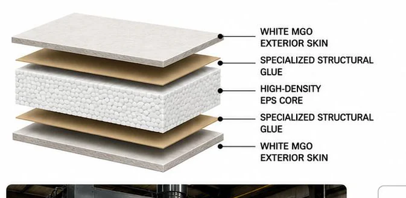
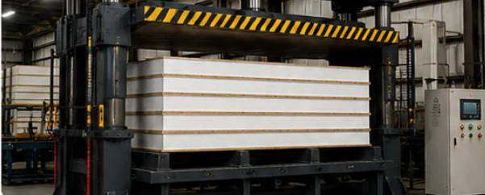
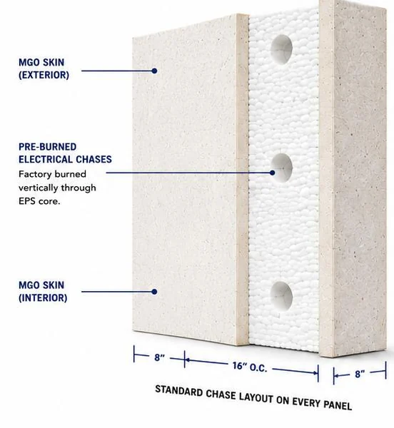
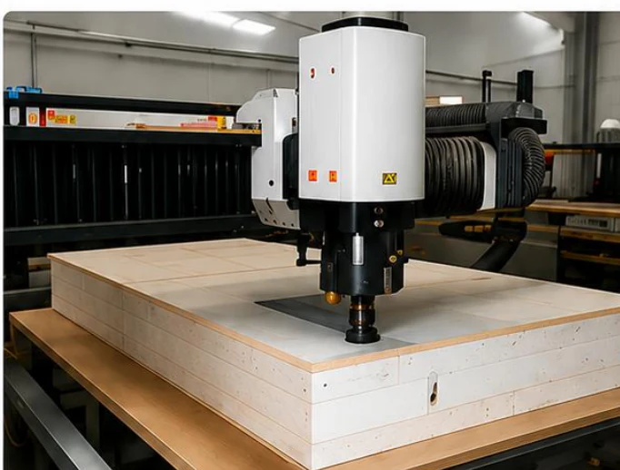

One panel.
One engineered
building envelope.
Structure, insulation, air barrier and vapour barrier in a single engineered panel — MGO skins permanently bonded to a high-density EPS core under hydraulic press, then CNC-machined to your drawings.
Built from the inside out.
Every Titanwall MGO SIP is a five-layer assembly: two white MGO exterior skins, two layers of specialised structural glue, and a high-density EPS core between them. The result behaves as one solid structural unit, not as separate materials stacked together.
- White MGO exterior skin — non-combustible, moisture and mould resistant, structural surface
- Specialised structural glue — penetrates microscopic pores so the bond exceeds the materials themselves
- High-density EPS core — continuous insulation, superior thermal performance, lightweight


Why the bond will not fail.
The panels are not simply glued. Structural glue is applied evenly to the MGO skins and EPS core, the layers are assembled and placed in a hydraulic press, and extreme uniform pressure is applied across the whole panel until cured — forcing the adhesive deep into both surfaces.
Adhesive applied
Specialised structural glue is applied evenly to the MGO skins and the EPS core.
Assembled and pressed
The layers are stacked and placed into a hydraulic press.
Cured under pressure
Extreme, uniform pressure is applied across the entire panel until the bond has cured.
Wiring runs built into every panel.
Every panel is manufactured with pre-burned circular electrical chases running vertically through the EPS core. Electricians pull wire through the channel without drilling framing members or modifying the structure — so the structural integrity of the panel is never compromised on site.
Chase locations marked
Every panel is marked at the top and bottom, so chase locations are easy to find after installation.
Standard spacing
8″ from each panel edge, 16″ between chase locations, consistent across every panel.
Easy rough-in
Openings are cut with standard skill saws or oscillating multi-tools once panels are installed, and wiring routes through the existing chase system.

The numbers.
| Panel construction | MGO / EPS / MGO |
|---|---|
| Exterior face (both sides) | White MGO sheathing |
| Core | High-density EPS |
| Panel thickness (standard) | 4.5″ / 6.5″ / 8.5″ / 10.25″ |
| Standard panel sizes | 4′×8′ / 4′×9′ / 4′×10′ / 4′×12′ / 4′×16′ |
| Panel weight (approx.) | 1.5 – 2.5 psf, varies by thickness |
| Acoustic performance | Base STC ~24 (unofficial) |
| Fire rating capability | 1 – 4 hour assemblies possible |
Thermal performance
Effective R-value, 6.5″ EPS core
Fire resistance is inherent to the material.
Magnum® MGO board is a fibreglass-reinforced, cementitious sheathing with no organic binders — so the fire performance is a property of the panel itself, not a coating added in a secondary layer.
CLASS A
- Flame spread0 – 25 (very low)
- Smoke developed0 – 450 (very low)
- CombustibilityNon-combustible
- Contribution to flame spreadNone
- Rated assembliesSupports 1-hour+

Precision. Efficiency. Consistency.
Panels are machined to the approved shop drawings rather than cut on site, which is what makes the envelope arrive straight, plumb, and ready to assemble in sequence.
Millimetre accuracy
In cutting and slotting.
CAD / BIM integration
From design straight through to production.
Automated production
Reduces human error.
High output
With fewer workers.
Rapid prototyping
Enables custom solutions.
Lower waste
Through automation.
Prefabricated
Labelled for fast assembly on site.
Consistent quality
The same panel, every run.
Base plate installation.
Proper base plate installation is essential to the structural integrity and performance of the building system. The plate is set back 1/2″ from the building line.
Prepare the surface
Make sure the concrete surface is smooth and clear of dust and debris.
Snap lines
Snap lines for your building and measure 1/2″ back for the plates.
Apply adhesive
Apply two lines of butyl or glue to the concrete.
Lay lumber
Lay the lumber on top of the butyl or glue and ensure they line up with the lines.
Install anchor bolts
Install anchor bolts from lumber to concrete and tighten the bolts.
Important notes
- Ensure all lumber is pressure treated and suitable for the environment.
- Anchor bolt spacing and size should follow engineering requirements.
- Tighten nuts securely, but do not over-tighten.
- Verify all plates are level and properly aligned before proceeding with wall panel installation.
Components
- Anchor bolt
- Washer
- Sill plate (lumber)
- Butyl or glue
- Concrete footing
More than panels.
Choosing Titanwall gives you access to a network of trusted partners and premium products, so the project runs from concept to completion through one point of contact.
Permit-ready designer
Plans tailored for SIP compliance and local codes.
Turnkey contractor
Experienced contractor referral with our systems.
ICF foundation systems
Superior insulation and strength below grade.
Fibreglass rebar systems
Stronger, lighter and corrosion resistant.
Engineered roof trusses
Designed for strength and efficiency.
Engineered floor trusses
Stronger spans and performance.
Metal roofing systems
Durable, low maintenance and energy efficient.
Building components
Complete selection of windows, doors, fasteners and more.
See how it compares.
Why Titanwall
Side-by-side against stick framing and poured concrete, what the cost difference actually looks like over 30 years, and what happened at the Paskwa wildfire.
Read the comparison →Projects
Commercial, residential, affordable housing and custom builds delivered with Titanwall MGO SIPs.
See the work →